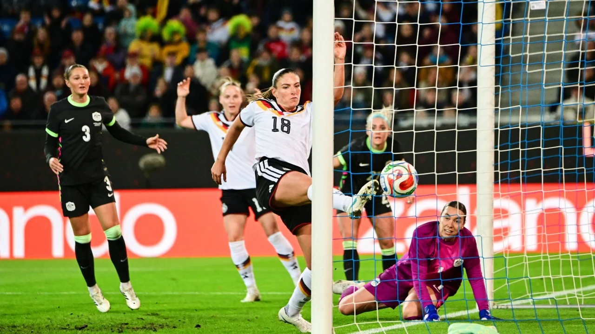

Australia edge New Zealand in epic World Cup opener
Jack Bostock scores a hat-trick of tries as Australia fight back to win the opening game of the Rugby League World Cup against New Zealand.
Jack Bostock scores a hat-trick of tries as Australia fight back to win the opening game of the Rugby League World Cup against New Zealand.

The ease in which England saw off Greece in round one of the Women's World Cup qualifying play-offs showed just how inefficient the structure currently is.

Almost half of women’s footballers are considering leaving the game early, with financial pressures and mental health struggles the main reasons, according to a Fifpro report highlighting the gulf between the sport’s rapid growth and conditions for most players. The 2026 Fifpro G

From ‘the new Toni Kroos’ to the US’ next big hope, Cavan Sullivan, we select some of the most talented players born in 2009. Check the progress of our classes of 2025 | 2024 | 2023 | 2022 | 2021 … back to 2014 . Here’s our Premier League class of 2026 Continue reading...
The Women’s Asian Cup winners continue to punch above their weight thanks to innovative youth development Japan have constantly pushed the boundaries in women’s football, whether it be with regular success in Asia or their ability to beat the biggest nations in the world. Nadeshi
Arsenal midfielder Mariona Caldentey is set to miss about two months of Women's Super League action because of a hamstring injury.
Lisandro Martinez's outburst shows Manchester United are in "chaos", says former captain Roy Keane.

Belirli bir şey mi arıyorsunuz? Tüm haberlerde ara.